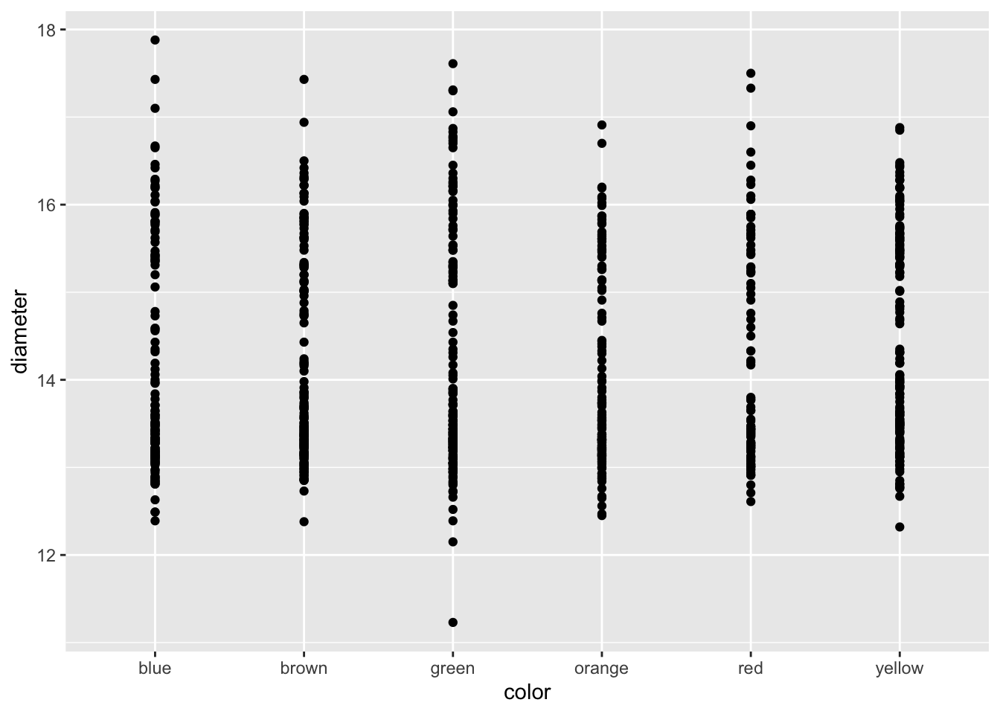
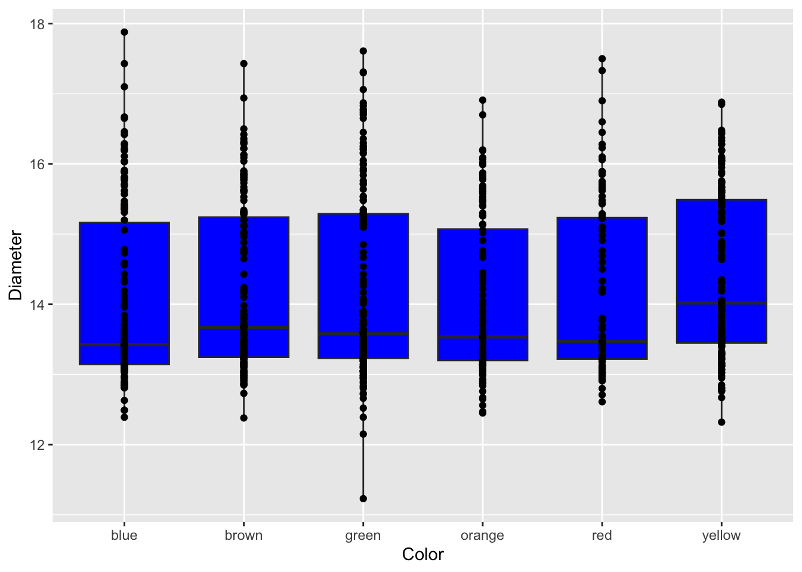
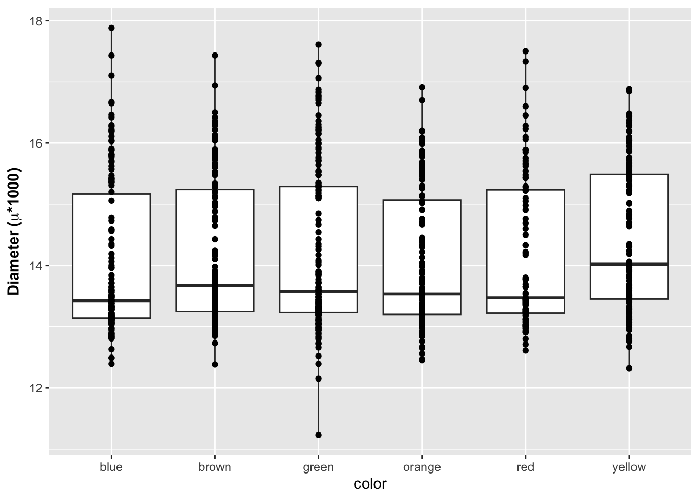

# load the libraries each time you restart R
library(tidyverse)
library(lubridate)
library(readxl)
library(scales)
library(skimr)
library(janitor)
library(patchwork)Plotting with GPlot
Objective
How to read in excel file and plot the data using GGPlot.
Data for the exercise
This page has a link to all of the data files
We will use a mock data file that uses M&M’s
M&M CSV file and also the M&M Excel file
Load Libraries
Read in the file
Read in excel files
Note that you can read in excel files in the same way.
# Note you can read in excel files just as easy
mm.df <- read_excel("../data/mms.xlsx")
head(mm.df)# A tibble: 6 × 4
center color diameter mass
<chr> <chr> <dbl> <dbl>
1 peanut butter blue 16.2 2.18
2 peanut butter brown 16.5 2.01
3 peanut butter orange 15.5 1.78
4 peanut butter brown 16.3 1.98
5 peanut butter yellow 15.6 1.62
6 peanut butter brown 17.4 2.59GGPlot
This script will go over a lot of the basics of creating graphs in GGPlot and later on we will go over how to do more specialized things. This is by no means a complete guide to GGPlot but will do most of the things that you will need to do in GGPlot. Any suggestions or recommendations of things to add would be welcome.
Graphing data
I feel that graphing is the key to all data analysis. If you can look at your data you can begin to see patterns that you may have predicted and want to test statistically. You will also be able to see outliers that exist that might affect results faster than looking at summary statistics. You can also determine if the data is normally distributed and how the variances compare from one group to another.
Using proper GGPlot code you are supposed to have data = , y = and x = ….
I have found that these are not necessary most of the time and we can talk about this later.
How to plot an XY plot
This is a basic XY plot of the data and is one of the first steps in exploring data. Later on we will look at how to modify this plot to be easier to interpret.
The dataframe comes first and the AES statement is the aesthetics or the x and y data you want to see. You can also add colors, shapes, fill, line types and some other things to map to the data in this statement.
Try adding color = color inside the aes(x=color, y=diameter) statement. You can also try shape = color
# GGplot uses layers to build a graph
ggplot(data=mm.df, aes(x=color, y=diameter)) + # this sets up data
geom_point() # this adds a geometry to present the data from above
Because GGPlot builds things in layers you can add other geoms to the plot. Below you should try this code and see what happens when you put in + after geom_line() and then add geom_boxplot(fill="blue"). Note try putting in before or after the geom_point() line.
# Add geom_point() -----
# Add points to the graph below using geom_point()
ggplot(mm.df, aes(x=color, y=diameter)) +
geom_point() 
Adding axes labels
You can add in axes labels that are not special. Using the labs(x= " ", y = " ") statement. You can add in line breaks by putting in a \n in the statement that you have below.
# Adding axes labels ----
ggplot(mm.df, aes(x=color, y=diameter)) +
geom_boxplot(fill="blue") +
geom_point() +
labs(x = "Color", y = "Diameter")
Formatted axes labels
What I find really nice is being able to create formatted axes labels. You can do this a few ways but I have found the that the expression statement works the best for my needs. You can add in a ~ to add a space between symbols and a * will connect things without a space.
# Label expressions -----
# Adding special formatting to labels
ggplot(mm.df, aes(x=color, y=diameter)) +
geom_boxplot() +
geom_point() +
labs(x = "color", y = expression(bold("Diameter ("*mu*"*1000)")))